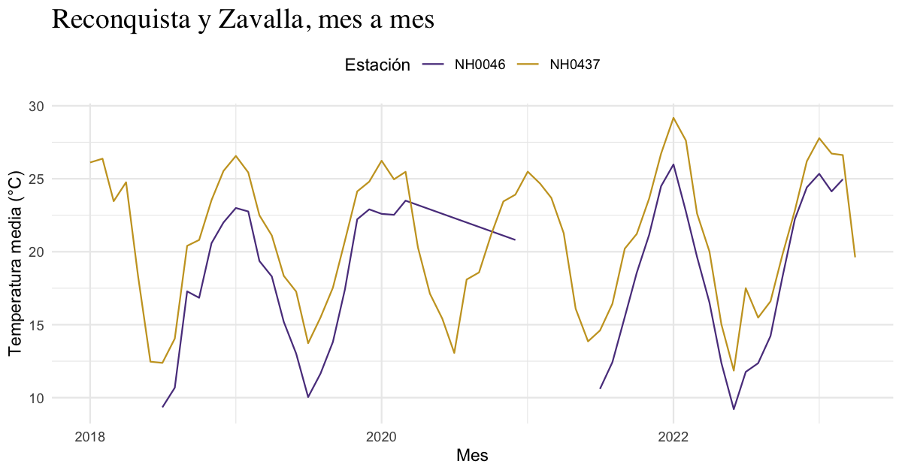

Número 01 · Santa Fe, Argentina · Datos del INTA
Porque a veces el clima te hace llorar… y los datos meteorológicos también.
Hay paquetes que resuelven problemas y hay paquetes que te acompañan mientras los resolvés. lloRando es de los segundos. Toma los archivos diarios de las estaciones meteorológicas del INTA, esos CSV de treinta y cinco columnas que nadie quiere abrir un lunes, y los convierte en una tabla prolija y en un gráfico que se entiende de un vistazo.
Tres funciones, un dataset y ninguna excusa para no mirar el clima con otros ojos.
El clima, en cifras
95.681observaciones diarias
5estaciones
67años de registros
1956primer dato
Todo eso viene incluido en el paquete, en el dataset estaciones. Lo instalás y ya lo tenés: sin descargas, sin rutas, sin sufrimiento.
Las protagonistas
Cinco estaciones de la provincia de Santa Fe, de norte a sur, con décadas de mediciones a cuestas.
| Estación | Id | Registros |
|---|---|---|
| INTA Reconquista | NH0437 |
1970 – 2023 |
| INTA Rafaela | NH0098 |
1956 – 2023 |
| INTA Oliveros | NH0472 |
1961 – 2017 |
| Las Rosas | NH0910 |
1975 – 2017 |
| UNR Zavalla | NH0046 |
1973 – 2023 |
Cada fila del dataset es un día en una estación. Las columnas que más vas a usar son estas:
head(estaciones[c("id", "fecha", "temperatura_abrigo_150cm")])
#> # A tibble: 6 × 3
#> id fecha temperatura_abrigo_150cm
#> <chr> <date> <dbl>
#> 1 NH0046 1973-01-01 27
#> 2 NH0046 1973-01-02 27.2
#> 3 NH0046 1973-01-03 25.2
#> 4 NH0046 1973-01-04 26.4
#> 5 NH0046 1973-01-05 26.0
#> 6 NH0046 1973-01-06 20.4-
id: el código de la estación. -
fecha: el día de la observación. -
temperatura_abrigo_150cm: la temperatura media, en °C, medida a 150 cm del suelo dentro del abrigo meteorológico.
Instalación
lloRando vive en GitHub. Para instalarlo:
install.packages("remotes")
remotes::install_github("maipochettino/lloRando")Y para empezar:
En tres gestos
I. Descargar
descargar_estacion() trae los datos de cualquier estación del repositorio del curso. Si el archivo ya está en tu compu, no lo vuelve a descargar: lo lee directamente.
datos <- descargar_estacion(id = "NH0437", ruta = "datos/NH0437.csv")II. Resumir
tabla_resumen_temperatura() calcula el promedio y el desvío estándar de la temperatura de cada estación, en formato largo. Los días sin dato se ignoran.
tabla_resumen_temperatura(estaciones)
#> # A tibble: 10 × 3
#> id estadistico valor
#> <chr> <chr> <dbl>
#> 1 NH0046 media 17.3
#> 2 NH0046 desvio 5.90
#> 3 NH0098 media 18.6
#> 4 NH0098 desvio 5.98
#> 5 NH0437 media 20.2
#> 6 NH0437 desvio 5.77
#> 7 NH0472 media 18.0
#> 8 NH0472 desvio 5.94
#> 9 NH0910 media 17.7
#> 10 NH0910 desvio 6.12¿Solo algunas estaciones? Filtralas antes:
norte_sur <- estaciones[estaciones$id %in% c("NH0437", "NH0046"), ]
tabla_resumen_temperatura(norte_sur)
#> # A tibble: 4 × 3
#> id estadistico valor
#> <chr> <chr> <dbl>
#> 1 NH0046 media 17.3
#> 2 NH0046 desvio 5.90
#> 3 NH0437 media 20.2
#> 4 NH0437 desvio 5.77III. Graficar
grafico_temperatura_mensual() promedia la temperatura de cada mes y la dibuja como una línea por estación. Podés elegir los colores y el título, y como devuelve un gráfico de ggplot2, también podés seguir editándolo.
recientes <- norte_sur[norte_sur$fecha >= as.Date("2018-01-01"), ]
grafico_temperatura_mensual(
recientes,
colores = c(NH0437 = "#5B3F8C", NH0046 = "#C9A227"),
titulo = "Reconquista y Zavalla, mes a mes"
) +
ggplot2::theme(
plot.title = ggplot2::element_text(family = "serif", size = 18),
legend.position = "top"
)
Reconquista, más al norte, se mantiene siempre unos grados por encima de Zavalla, y los inviernos se separan más que los veranos.